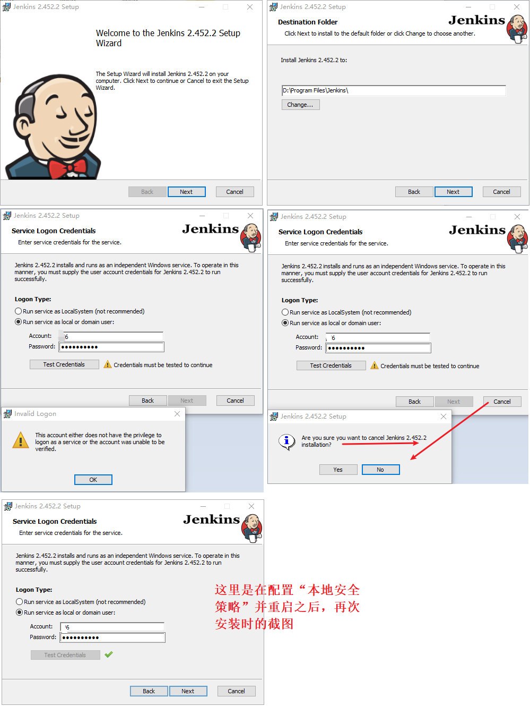
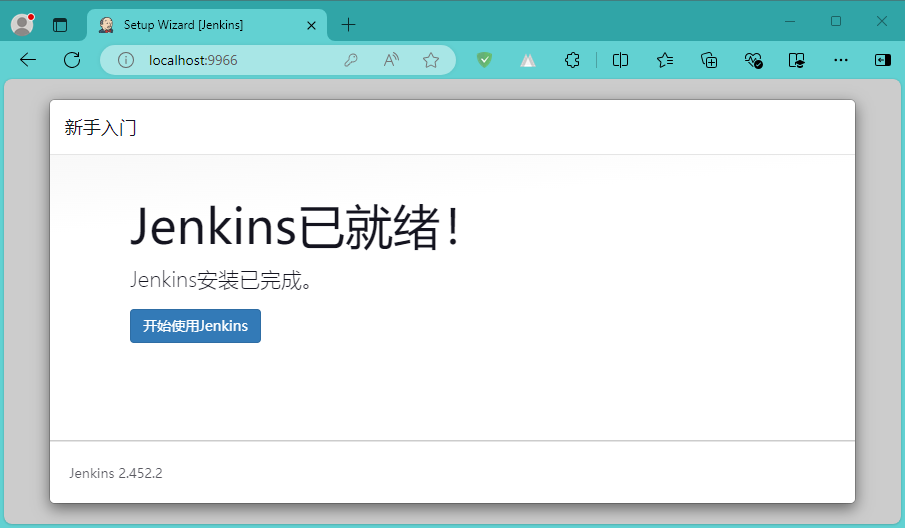
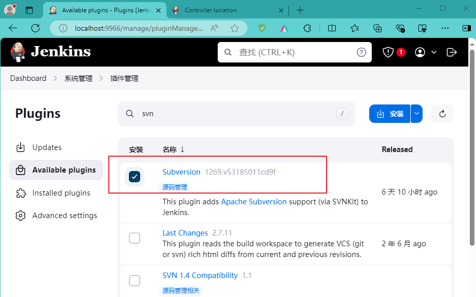

Jenkins
Jenkins 中文站点介绍：Jenkins是开源CI&CD软件领导者， 提供超过1000个插件来支持构建、部署、自动化， 满足任何项目的需要。
安装
win 10
该章节说一下 win 10 下的安装
下载
下载地址：Download and deploy。这里选择
安装步骤
Windows 环境安装一般都没有什么难度，不过有几点需要注意一下
Service Logon Credentials
如下图所示，这个环节有两个选项，查看其它的教程时，基本上都是选择第二个，咱也随大流了，选择的是：Run service as local or domain user 。选择之后会让你输入用户名和密码（电脑登录账号），之后需要测试用户的有效性（是否作为服务登录）。

用户如何作为服务登录
# Win + R 打开 运行
# 进入本地安全策略
secpol.msc
Port Selection
Select Java home directory (JDK or JRE)
这个挺不错，因为之前安装过JDK，这里就直接弄过来了
后续
新手入门
安装结束之后，初次访问会有一些初始化配置
解锁 Jenkins
安装插件
小白一个，这里安装推荐的插件
创建管理员
实例配置
这里还是有点懵逼的，查了一下，基本上都说：直接下一步吧！

其他配置
进入首页
配置完成之后，就进入了首页>控制台了
看到上面的图片你可能也有和我一样的问题：这中英文混杂，真别扭啊！
解决汉化不完整
作为一个地地道道的中国人，汉化不完整看着真费劲啊，必须得搞一下。参考 解决Jenkins部分汉化、汉化不全有效办法_jenkins汉化不完全-CSDN博客
-Duser.language=C.UTF-8
插件国内镜像
当时网上查看
安装插件
SVN 插件
后面需要配合

PowerShell 插件

任务
SVN + 前端 a2bei4 项目
因为工作的原因，一直在用 SVN ，所以先拿他下手。
SVN 仓储
SVN 仓储已经准备好，你可以查看这里：SVN（Subversion、TortoiseSVN） - xiaodu114.github.io。用的就是最初导入的两个示例项目：基于 fastapi 的 python 项目和前端类库 a2bei4 项目
post-commit
这，这，这很重要。
REPOS="$1"
REV="$2"
TXN_NAME="$3"
LOG_FILE="/home/ddz/1-code/svn/repository/log/post-commit.log" # 定义日志文件路径
# 记录提交信息到日志文件
echo "》》》》》》监听到提交，信息如下：" >> $LOG_FILE
echo "REPOS： $REPOS" >> $LOG_FILE
echo "REV： $REV" >> $LOG_FILE
echo "TXN_NAME： $TXN_NAME" >> $LOG_FILE
echo " " >> $LOG_FILE
# 遍历提交的文件列表并记录到日志文件
echo "变化的文件如下：" >> $LOG_FILE
svnlook changed -r $REV $REPOS >> $LOG_FILE
echo " " >> $LOG_FILE
# 检查本次提交中是否包含 vue 项目的变更
if svnlook changed -r $REV $REPOS | grep 'web/a2bei4'; then
# 使用 cURL 发送 GET 请求通知 Jenkins 构建 a2bei4 项目
echo "Calling Jenkins to build a2bei4..." >> $LOG_FILE
curl -u admin:admin666 -X GET http://192.168.xxx.xxx:9966/job/task-001/build?token=user2-a2bei4 >> $LOG_FILE
fi
echo " " >> $LOG_FILE
echo " " >> $LOG_FILE
echo " " >> $LOG_FILE
你应该已经发现，这里通知
SVN 客户端
如下图中的注释，这里分别在两个文件夹都拉去了上面的仓储，来模拟两个用户，一个用户修改并签入，另一个用户则通过 SVN 的 post-commit 通知
Jenkins 新建任务
开始
任务名称和任务类型
General
任务的相关配置从
源码管理
这里选用的是
还需要提供
构建触发器
这里选择的是触发远程构建，需要设置一个身份验证令牌，这里是
构建环境
该环节这里直接跳过了
构建步骤（Build Steps）
这里选择的是
# 1、进入项目目录
cd a2bei4
# 2、判断 package.json 是否修改
# SVN 版本号
$revision = $ENV:SVN_REVISION
# 时间戳
$xmlFileName = (([DateTime]::Now.ToUniversalTime().Ticks - 621355968000000000)/10000).tostring().Substring(0,13) + ".xml"
# 将最新版本的详细日志信息写入到 *.xml 文件
# svn log -r $revision --verbose --xml >> $xmlFileName
# 添加 -q 参数，会在上面的基础上排除提交信息。提交信息如果包含中文时，写入 xml 时可能会出现乱码
svn log -r $revision --verbose --xml -q >> $xmlFileName
# 读取 *.xml 文件内容
$xmlContent = Get-Content -Path $xmlFileName -Raw
$PACKAGE_JSON_CHANGED = $false
if(![String]::IsNullOrEmpty($xmlContent)){
# 使用[xml]类型转换来将字符串转换为XML对象
$xml = [xml]$xmlContent
# 使用Select-Xml来选择所有的<path>元素
$paths = $xml.SelectNodes('//log/logentry/paths/path')
# 遍历所有<path>元素并输出它们的值
foreach ($path in $paths) {
if ($path.InnerText.ToLower().EndsWith("/a2bei4/package.json")) {
$PACKAGE_JSON_CHANGED = $true
break
}
}
}
# 删除 *.xml 文件
Remove-Item -Path $xmlFileName -Force
# 3、根据 package.json 是否被修改执行相应操作
if ($PACKAGE_JSON_CHANGED) {
Write-Host '》》》》》》 package.json has changed. Cleaning up...'
if (Test-Path -Path 'node_modules') {
Write-Host '》》》》》》 node_modules exists. delete node_modules...'
Remove-Item -Path node_modules -Recurse -Force
}
Write-Host '》》》》》》 Installing dependencies...'
npm install
Write-Host '》》》》》》 build project...'
npm run c
} else {
Write-Host '》》》》》》 package.json has not changed.'
if (Test-Path -Path 'node_modules') {
Write-Host '》》》》》》 node_modules exists. build project...'
npm run c
} else {
Write-Host '》》》》》》 node_modules does not exist. Installing dependencies...'
npm install
Write-Host '》》》》》》 build project...'
npm run c
}
}
Write-Host 'Successfully ...'
构建后操作
该环节这里直接跳过了
结束
测试一下
浏览器 HTTP 请求
“触发远程构建”配置可知，就是发个 HTTP 请求就搞定了，还是个 GET 请求，直接用浏览器试一下
下面是构建成功的截图
下面是构建日志的截图
非 a2bei 项目更新
如果不是
a2bei 项目更新
包含 package.json
这里更新一下
不包含 package.json
如果更新文件中不包含 package.json，此时不需要重新安装。这次签入测试懵逼了，提交信息中写了中文注释，
乱码和
查了一下，没有找到写入xml文件时乱码的有效解决办法。如果有哪位朋友知道，请不吝赐教，谢谢。于是想曲线救国，两种解决办法：一是提交信息不包含中文；二是写入日志的时候不包含提交信息。第一个就算了，英文有点不好意思说，难道用拼音，哈哈，不错的主意。你还真别说，第二种真的有参数可以控制：
上面的问题解决了，但是又想到了一种情况：如果文件路径中包含中文，那岂不是还是不行……是的，我验证了一下，确实是乱码。真的凌乱了，曲线救国还是不行啊！还得是正途啊！在哪里呢？